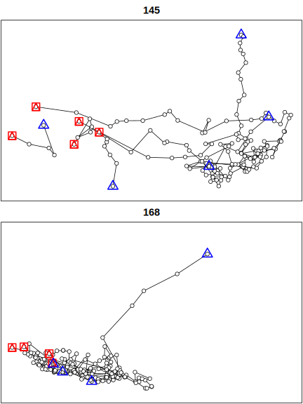
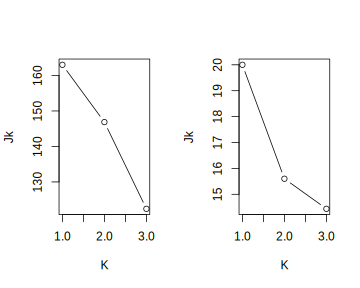

Биотелеметрия
Локации белого медведя (Durner, 2019).
remote <- "https://alaska.usgs.gov/data/polarBear/polarBear_satelliteTelemetry_distribution_HabitatSelection_beaufortChukchi_1985_2016/polarBear_satelliteTelemetry_distribution_HabitatSelection_beaufortChukchi_Durner_1985_2016_metadata.zip"
local <- tempfile()
download.file(remote,local,mode="wb")
list1 <- unzip(local,exdir=tempdir())
fname <- list1[grep("kernelUD",basename(list1))]
file.remove(list1)[1] "C:\\TEMP\\Rtmpq4GR7z/polarBear_satelliteTelemetry_kernelUD_beaufortChukchi_Durner_1985_2016.csv"Подготовка данных
Loading required package: sfLinking to GEOS 3.9.3, GDAL 3.5.2, PROJ 8.2.1; sf_use_s2() is TRUELoading required package: ggplot2Loading required package: adehabitatHRLoading required package: spLoading required package: ade4Loading required package: adehabitatMARegistered S3 methods overwritten by 'adehabitatMA':
method from
print.SpatialPixelsDataFrame sp
print.SpatialPixels sp Loading required package: adehabitatLTLoading required package: CircStatsLoading required package: MASSLoading required package: boot BearID_ud DateTimeUTC_ud latitude_ud longitude_ud season period
21613 255 5/23/2010 21:49 70.981 -146.952 max 716
21614 255 5/27/2010 18:12 70.992 -146.340 max 716
21615 255 5/30/2010 18:41 70.815 -145.721 max 716
21616 255 6/2/2010 20:09 70.689 -143.814 max 716
21617 255 6/5/2010 20:12 71.729 -146.236 max 716
21618 255 6/8/2010 21:11 72.548 -145.328 max 716 BearID_ud DateTimeUTC_ud latitude_ud longitude_ud season period group
21613 255 5/23/2010 21:49 70.981 -146.952 max 0716 max:0716
21614 255 5/27/2010 18:12 70.992 -146.340 max 0716 max:0716
21615 255 5/30/2010 18:41 70.815 -145.721 max 0716 max:0716
21616 255 6/2/2010 20:09 70.689 -143.814 max 0716 max:0716
21617 255 6/5/2010 20:12 71.729 -146.236 max 0716 max:0716
21618 255 6/8/2010 21:11 72.548 -145.328 max 0716 max:0716Simple feature collection with 21618 features and 5 fields
Geometry type: POINT
Dimension: XY
Bounding box: xmin: -179.967 ymin: 63.8911 xmax: 179.998 ymax: 82.22576
Geodetic CRS: WGS 84
First 10 features:
BearID_ud DateTimeUTC_ud season period group geometry
1 196 5/2/1992 22:00 max 8595 max:8595 POINT (-125.103 73.985)
2 196 5/11/1992 0:43 max 8595 max:8595 POINT (-125.262 74.398)
3 196 5/17/1992 22:19 max 8595 max:8595 POINT (-123.282 74.458)
4 196 5/23/1992 23:27 max 8595 max:8595 POINT (-125.084 73.983)
5 182 5/2/1986 17:57 max 8595 max:8595 POINT (-137.429 69.353)
6 182 5/12/1986 0:46 max 8595 max:8595 POINT (-138.622 69.735)
7 182 5/26/1986 18:51 max 8595 max:8595 POINT (-139.31 69.73)
8 182 6/2/1986 0:19 mlt 8595 mlt:8595 POINT (-139.165 69.839)
9 182 6/7/1986 19:53 mlt 8595 mlt:8595 POINT (-138.242 69.717)
10 182 6/23/1986 0:38 mlt 8595 mlt:8595 POINT (-141.019 69.72)[1] 4326Cохранение всех данных в формате ГИС
if (!dir.exists("data"))
dir.create("data")
dst <- "data/locations_for_kernelUD.geojson"
sf::st_write(loc,dsn=dst,delete_layer=file.exists(dst),delete_dsn=file.exists(dst))
145 168
155 183
145 168
155 183 Сохранение части данных
Участки обитания
Формирование сетки
Simple feature collection with 338 features and 5 fields
Geometry type: POINT
Dimension: XY
Bounding box: xmin: -88920.86 ymin: -2211301 xmax: 733452.4 ymax: -1455791
Projected CRS: WGS 84 / North Pole LAEA Alaska
First 10 features:
BearID_ud DateTimeUTC_ud season period group geometry
17462 145 5/14/2008 3:54 max 0716 max:0716 POINT (208385.1 -2172907)
17463 145 5/18/2008 20:14 max 0716 max:0716 POINT (219304.5 -2105274)
17464 145 5/21/2008 21:32 max 0716 max:0716 POINT (199755 -2080243)
17465 145 5/27/2008 18:08 max 0716 max:0716 POINT (183527.7 -2054768)
17466 145 5/30/2008 18:29 max 0716 max:0716 POINT (190180.1 -2042328)
17467 145 6/2/2008 18:37 max 0716 max:0716 POINT (191254.4 -2033488)
17468 145 6/5/2008 20:03 max 0716 max:0716 POINT (144390 -2001121)
17469 145 6/8/2008 20:16 max 0716 max:0716 POINT (142381 -2013417)
17470 145 6/11/2008 21:29 max 0716 max:0716 POINT (104305.1 -2028877)
17471 145 6/17/2008 19:01 max 0716 max:0716 POINT (146107.4 -1997239)[1] 3572[1] "+proj=laea +lat_0=90 +lon_0=-150 +x_0=0 +y_0=0 +datum=WGS84 +units=m +no_defs" xmin ymin xmax ymax
-88920.86 -2211300.60 733452.40 -1455790.58 xmin ymin xmax ymax
-588920.9 -2711300.6 1233452.4 -955790.6 sfc_POINT of length 22344; first list element: 'XY' num [1:2] -582921 -2705301Formal class 'SpatialPoints' [package "sp"] with 3 slots
..@ coords : num [1:22344, 1:2] -582921 -570921 -558921 -546921 -534921 ...
.. ..- attr(*, "dimnames")=List of 2
.. .. ..$ : NULL
.. .. ..$ : chr [1:2] "coords.x1" "coords.x2"
..@ bbox : num [1:2, 1:2] -582921 -2705301 1229079 -953301
.. ..- attr(*, "dimnames")=List of 2
.. .. ..$ : chr [1:2] "coords.x1" "coords.x2"
.. .. ..$ : chr [1:2] "min" "max"
..@ proj4string:Formal class 'CRS' [package "sp"] with 1 slot
.. .. ..@ projargs: chr "+proj=laea +lat_0=90 +lon_0=-150 +x_0=0 +y_0=0 +datum=WGS84 +units=m +no_defs"
.. .. ..$ comment: chr "| __truncated__"Построение кёрнел
Пример построения кёрнел с параметром h="LSCV"
ud <- adehabitatHR::kernelUD(sf::as_Spatial(loc["BearID_ud"])
,grid=gr
,h=list("href","LSCV",30000)[[2]]
)

ud <- adehabitatHR::kernelUD(sf::as_Spatial(loc["BearID_ud"]) #<<
,grid=gr
,h=list("href","LSCV",30000)[[3]]
)List of 2
$ 145:Formal class 'estUD' [package "adehabitatHR"] with 9 slots
.. ..@ h :List of 2
.. .. ..$ h : num 30000
.. .. ..$ meth: chr "specified"
.. ..@ vol : logi FALSE
.. ..@ data :'data.frame': 22344 obs. of 1 variable:
.. .. ..$ ud: num [1:22344] 0 0 0 0 0 0 0 0 0 0 ...
.. ..@ coords.nrs : num(0)
.. ..@ grid :Formal class 'GridTopology' [package "sp"] with 3 slots
.. .. .. ..@ cellcentre.offset: Named num [1:2] -582921 -2705301
.. .. .. .. ..- attr(*, "names")= chr [1:2] "Var2" "Var1"
.. .. .. ..@ cellsize : Named num [1:2] 12000 12000
.. .. .. .. ..- attr(*, "names")= chr [1:2] "Var2" "Var1"
.. .. .. ..@ cells.dim : Named int [1:2] 152 147
.. .. .. .. ..- attr(*, "names")= chr [1:2] "Var2" "Var1"
.. ..@ grid.index : int [1:22344] 1 153 305 457 609 761 913 1065 1217 1369 ...
.. ..@ coords : num [1:22344, 1:2] -582921 -582921 -582921 -582921 -582921 ...
.. .. ..- attr(*, "dimnames")=List of 2
.. .. .. ..$ : NULL
.. .. .. ..$ : chr [1:2] "Var2" "Var1"
.. ..@ bbox : num [1:2, 1:2] -588921 -2711301 1235079 -947301
.. .. ..- attr(*, "dimnames")=List of 2
.. .. .. ..$ : chr [1:2] "Var2" "Var1"
.. .. .. ..$ : chr [1:2] "min" "max"
.. ..@ proj4string:Formal class 'CRS' [package "sp"] with 1 slot
.. .. .. ..@ projargs: chr "+proj=laea +lat_0=90 +lon_0=-150 +x_0=0 +y_0=0 +datum=WGS84 +units=m +no_defs"
.. .. .. ..$ comment: chr "| __truncated__"
$ 168:Formal class 'estUD' [package "adehabitatHR"] with 9 slots
.. ..@ h :List of 2
.. .. ..$ h : num 30000
.. .. ..$ meth: chr "specified"
.. ..@ vol : logi FALSE
.. ..@ data :'data.frame': 22344 obs. of 1 variable:
.. .. ..$ ud: num [1:22344] 0 0 0 0 0 0 0 0 0 0 ...
.. ..@ coords.nrs : num(0)
.. ..@ grid :Formal class 'GridTopology' [package "sp"] with 3 slots
.. .. .. ..@ cellcentre.offset: Named num [1:2] -582921 -2705301
.. .. .. .. ..- attr(*, "names")= chr [1:2] "Var2" "Var1"
.. .. .. ..@ cellsize : Named num [1:2] 12000 12000
.. .. .. .. ..- attr(*, "names")= chr [1:2] "Var2" "Var1"
.. .. .. ..@ cells.dim : Named int [1:2] 152 147
.. .. .. .. ..- attr(*, "names")= chr [1:2] "Var2" "Var1"
.. ..@ grid.index : int [1:22344] 1 153 305 457 609 761 913 1065 1217 1369 ...
.. ..@ coords : num [1:22344, 1:2] -582921 -582921 -582921 -582921 -582921 ...
.. .. ..- attr(*, "dimnames")=List of 2
.. .. .. ..$ : NULL
.. .. .. ..$ : chr [1:2] "Var2" "Var1"
.. ..@ bbox : num [1:2, 1:2] -588921 -2711301 1235079 -947301
.. .. ..- attr(*, "dimnames")=List of 2
.. .. .. ..$ : chr [1:2] "Var2" "Var1"
.. .. .. ..$ : chr [1:2] "min" "max"
.. ..@ proj4string:Formal class 'CRS' [package "sp"] with 1 slot
.. .. .. ..@ projargs: chr "+proj=laea +lat_0=90 +lon_0=-150 +x_0=0 +y_0=0 +datum=WGS84 +units=m +no_defs"
.. .. .. ..$ comment: chr "| __truncated__"
- attr(*, "class")= chr "estUDm"Площади по уровням
ka <- adehabitatHR::kernel.area(ud,unin="m",unout="km2") #<<
colnames(ka) <- names(ud)
knitr::kable(rbind(head(ka,4),tail(ka,4)),row.names=TRUE)| 145 | 168 | |
|---|---|---|
| 20 | 9936 | 5472 |
| 25 | 13104 | 7200 |
| 30 | 16560 | 8928 |
| 35 | 20304 | 10944 |
| 80 | 107568 | 38448 |
| 85 | 129744 | 45216 |
| 90 | 158112 | 54432 |
| 95 | 199008 | 72720 |
ta <- reshape(ka,direction="long"
,varying=list(grep("^\\d+",colnames(ka),value=TRUE))
,times=grep("^\\d+",colnames(ka),value=TRUE)
,v.names="area"
,timevar="bear"
,ids=row.names(ka)
,idvar="level"
)
ta$level <- as.numeric(ta$level)
knitr::kable(rbind(head(ta,4),tail(ta,4)),row.names=FALSE)| bear | area | level |
|---|---|---|
| 145 | 9936 | 20 |
| 145 | 13104 | 25 |
| 145 | 16560 | 30 |
| 145 | 20304 | 35 |
| 168 | 38448 | 80 |
| 168 | 45216 | 85 |
| 168 | 54432 | 90 |
| 168 | 72720 | 95 |

Извлечение уровней
levHR <- c(95,50)
hr <- lapply(ud,function(U) {
hr2 <- lapply(levHR,function(L) {
hr3 <- adehabitatHR::getverticeshr(U,percent=L,unin="m",unout="km2")
hr3$level <- L
sf::st_as_sf(hr3)
})
do.call(rbind,hr2)
})
hr <- lapply(names(hr),function(x) {hr[[x]]$id <- x;hr[[x]]})
hr <- do.call(rbind,hr)Экспорт
Simple feature collection with 4 features and 3 fields
Geometry type: GEOMETRY
Dimension: XY
Bounding box: xmin: -109626 ymin: -2254479 xmax: 779252.1 ymax: -1438563
Projected CRS: +proj=laea +lat_0=90 +lon_0=-150 +x_0=0 +y_0=0 +datum=WGS84 +units=m +no_defs
id area level geometry
homerange 145 200163.21 95 MULTIPOLYGON (((-108821 -20...
homerange1 145 35748.68 50 POLYGON ((437079.1 -2107065...
homerange2 168 73098.40 95 POLYGON ((-90920.86 -210402...
homerange11 168 17253.45 50 POLYGON ((-6920.856 -214782...Анализ траекторий
Построение траекторий
- Анализ траектории: пакет
adehabitatLT
- Манипуляция с пространственными данными: пакет
sf
- Визуализация (интерактивная): пакет
mapview
Loading required package: mapviewReading layer `locations_for_ltraj' from data source
`data\locations_for_ltraj.geojson' using driver `GeoJSON'
Simple feature collection with 338 features and 5 fields
Geometry type: POINT
Dimension: XY
Bounding box: xmin: -152.516 ymin: 69.8789 xmax: -128.911 ymax: 75.993
Geodetic CRS: WGS 84loc$DateTimeUTC_ud <- as.POSIXct(loc$DateTimeUTC_ud
,format="%m/%d/%Y %H:%M"
,tz=Sys.getenv("TZ"))
locSimple feature collection with 338 features and 5 fields
Geometry type: POINT
Dimension: XY
Bounding box: xmin: -88920.86 ymin: -2211301 xmax: 733452.4 ymax: -1455791
Projected CRS: WGS 84 / North Pole LAEA Alaska
First 10 features:
BearID_ud DateTimeUTC_ud season period group geometry
1 145 2008-05-14 03:54:00 max 0716 max:0716 POINT (208385.1 -2172907)
2 145 2008-05-18 20:14:00 max 0716 max:0716 POINT (219304.5 -2105274)
3 145 2008-05-21 21:32:00 max 0716 max:0716 POINT (199755 -2080243)
4 145 2008-05-27 18:08:00 max 0716 max:0716 POINT (183527.7 -2054768)
5 145 2008-05-30 18:29:00 max 0716 max:0716 POINT (190180.1 -2042328)
6 145 2008-06-02 18:37:00 max 0716 max:0716 POINT (191254.4 -2033488)
7 145 2008-06-05 20:03:00 max 0716 max:0716 POINT (144390 -2001121)
8 145 2008-06-08 20:16:00 max 0716 max:0716 POINT (142381 -2013417)
9 145 2008-06-11 21:29:00 max 0716 max:0716 POINT (104305.1 -2028877)
10 145 2008-06-17 19:01:00 max 0716 max:0716 POINT (146107.4 -1997239)lt1 <- as.ltraj(st_coordinates(loc)
,date=loc$DateTimeUTC_ud
,id=loc$BearID_ud
,proj4string=sp::CRS(st_crs(loc)$proj4string)
)
names(lt1) <- sapply(lt1,function(x) attr(x,"id"))
*********** List of class ltraj ***********
Type of the traject: Type II (time recorded)
* Time zone: UTC *
Irregular traject. Variable time lag between two locs
Characteristics of the bursts:
id burst nb.reloc NAs date.begin date.end
145 145 145 155 0 2008-05-14 03:54:00 2012-05-15 18:27:00
168 168 168 183 0 2012-04-12 21:45:00 2015-05-30 04:00:00
infolocs provided. The following variables are available:
[1] "pkey"Преобразования
в data frame
x y date dx dy dist dt R2n abs.angle
145.1 208385.1 -2172907 2008-05-14 03:54:00 10919.387 67632.70 68508.504 404400 0 1.410726
145.2 219304.5 -2105274 2008-05-18 20:14:00 -19549.513 25031.27 31760.792 263880 4693415081 2.233846
145.3 199755.0 -2080243 2008-05-21 21:32:00 -16227.265 25475.45 30204.681 506160 8661090144 2.137962
145.4 183527.7 -2054768 2008-05-27 18:08:00 6652.395 12439.54 14106.617 260460 14574812280 1.079715
145.5 190180.1 -2042328 2008-05-30 18:29:00 1074.327 8840.00 8905.043 259680 17382287790 1.449859
145.6 191254.4 -2033488 2008-06-02 18:37:00 -46864.403 32366.86 56955.119 264360 19731107532 2.537170
rel.angle id burst pkey
145.1 NA 145 145 145.2008-05-14 03:54:00
145.2 0.82312004 145 145 145.2008-05-18 20:14:00
145.3 -0.09588465 145 145 145.2008-05-21 21:32:00
145.4 -1.05824674 145 145 145.2008-05-27 18:08:00
145.5 0.37014429 145 145 145.2008-05-30 18:29:00
145.6 1.08731086 145 145 145.2008-06-02 18:37:00в ltraj
*********** List of class ltraj ***********
Type of the traject: Type II (time recorded)
* Time zone: UTC *
Irregular traject. Variable time lag between two locs
Characteristics of the bursts:
id burst nb.reloc NAs date.begin date.end
1 145 145 155 0 2008-05-14 03:54:00 2012-05-15 18:27:00
2 168 168 183 0 2012-04-12 21:45:00 2015-05-30 04:00:00
infolocs provided. The following variables are available:
[1] "pkey" id burst nb.reloc NAs date.begin date.end
1 145 145 155 0 2008-05-14 03:54:00 2012-05-15 18:27:00
2 168 168 183 0 2012-04-12 21:45:00 2015-05-30 04:00:00Подтраектории
Разбиение на отдельные сегменты по условию, если есть пропуск более 100 дней.
Warning in cutltraj(lt1, cond, nextr = TRUE): At least 3 relocations are needed for a burst
1 relocations have been deleted
*********** List of class ltraj ***********
Type of the traject: Type II (time recorded)
* Time zone: UTC *
Irregular traject. Variable time lag between two locs
Characteristics of the bursts:
id burst nb.reloc NAs date.begin date.end
1 145 145.1 12 0 2008-05-14 03:54:00 2008-06-26 18:57:00
2 145 145.3 27 0 2009-03-17 20:15:00 2009-06-30 18:29:00
3 145 145.4 63 0 2009-11-03 18:26:00 2010-06-28 18:58:00
4 145 145.5 47 0 2010-12-01 20:34:00 2011-06-29 16:51:00
5 145 145.6 5 0 2012-03-28 20:20:00 2012-05-15 18:27:00
6 168 168.1 26 0 2012-04-12 21:45:00 2012-06-30 10:00:00
7 168 168.2 79 0 2012-11-02 00:00:00 2013-06-28 14:17:00
8 168 168.3 27 0 2014-04-13 21:27:00 2014-06-30 22:00:00
9 168 168.4 51 0 2014-12-03 00:00:00 2015-05-30 04:00:00
infolocs provided. The following variables are available:
[1] "pkey"Регулярность
Проверка на регулярность
[1] FALSE Min. 1st Qu. Median Mean 3rd Qu. Max. NA's
3.000 3.000 3.012 7.753 3.090 289.299 2 Обратим внимание на медианное значение частоты локации: каждые три дня.
Установим точку отсчета
[1] "2023-04-15 12:00:00 UTC"Заполним пропуски значениями NA
*********** List of class ltraj ***********
Type of the traject: Type II (time recorded)
* Time zone: UTC *
Irregular traject. Variable time lag between two locs
Characteristics of the bursts:
id burst nb.reloc NAs date.begin date.end
1 145 145.1 15 3 2008-05-14 03:54:00 2008-06-26 18:57:00
2 145 145.3 36 9 2009-03-17 20:15:00 2009-06-30 18:29:00
3 145 145.4 80 17 2009-11-03 18:26:00 2010-06-28 18:58:00
4 145 145.5 71 24 2010-12-01 20:34:00 2011-06-29 16:51:00
5 145 145.6 17 12 2012-03-28 20:20:00 2012-05-15 18:27:00
6 168 168.1 27 4 2012-04-12 21:45:00 2012-06-30 10:00:00
7 168 168.2 80 1 2012-11-02 00:00:00 2013-06-28 14:17:00
8 168 168.3 27 0 2014-04-13 21:27:00 2014-06-30 22:00:00
9 168 168.4 60 12 2014-12-06 00:00:00 2015-05-30 04:00:00
infolocs provided. The following variables are available:
[1] "pkey"Приведение к единому шагу по времени. См. визуализацию.
*********** List of class ltraj ***********
Type of the traject: Type II (time recorded)
* Time zone: UTC *
Regular traject. Time lag between two locs: 259200 seconds
Characteristics of the bursts:
id burst nb.reloc NAs date.begin date.end
1 145 145.1 15 3 2008-05-15 12:00:00 2008-06-26 12:00:00
2 145 145.3 36 9 2009-03-17 12:00:00 2009-06-30 12:00:00
3 145 145.4 80 17 2009-11-03 12:00:00 2010-06-28 12:00:00
4 145 145.5 71 24 2010-12-01 12:00:00 2011-06-29 12:00:00
5 145 145.6 17 12 2012-03-28 12:00:00 2012-05-15 12:00:00
6 168 168.1 27 4 2012-04-12 12:00:00 2012-06-29 12:00:00
7 168 168.2 80 1 2012-11-02 12:00:00 2013-06-27 12:00:00
8 168 168.3 27 0 2014-04-14 12:00:00 2014-07-01 12:00:00
9 168 168.4 60 12 2014-12-04 12:00:00 2015-05-30 12:00:00
infolocs provided. The following variables are available:
[1] "pkey"Проверка на регулярность по времени.
[1] FALSEОдинаковый период
Получение траекторий разных объектов в один временной период.
lt5 <- set.limits(lt4[c(5,6)]
,begin="2012-04-11 12:00",dur=33,units="day"
,pattern="%Y-%m-%d %H:%M",tz=Sys.getenv("TZ"))
lt5
*********** List of class ltraj ***********
Type of the traject: Type II (time recorded)
* Time zone unspecified: dates printed in user time zone *
Regular traject. Time lag between two locs: 259200 seconds
Characteristics of the bursts:
id burst nb.reloc NAs date.begin date.end
1 145 145.6 12 8 2012-04-11 12:00:00 2012-05-14 12:00:00
2 168 168.1 12 1 2012-04-11 12:00:00 2012-05-14 12:00:00
infolocs provided. The following variables are available:
[1] "pkey"[1] TRUEШаги
… по расстоянию
Локации каждые 50 км. См. визуализацию.
*********** List of class ltraj ***********
Type of the traject: Type II (time recorded)
* Time zone: UTC *
Irregular traject. Variable time lag between two locs
Characteristics of the bursts:
id burst nb.reloc NAs date.begin date.end
1 145 145.1.R50000 6 0 2008-05-15 12:00:00 2008-06-26 05:12:02
2 145 145.3.R50000 19 0 2009-03-17 12:00:00 2009-06-30 08:29:14
3 145 145.4.R50000 32 0 2009-11-03 12:00:00 2010-06-27 09:31:12
4 145 145.5.R50000 21 0 2010-12-01 12:00:00 2011-06-27 04:20:19
5 145 145.6.R50000 4 0 2012-03-28 12:00:00 2012-05-10 23:37:20
6 168 168.1.R50000 8 0 2012-04-12 12:00:00 2012-06-28 06:44:26
7 168 168.2.R50000 44 0 2012-11-02 12:00:00 2013-06-27 07:26:02
8 168 168.3.R50000 3 0 2014-04-14 12:00:00 2014-07-01 06:11:42
9 168 168.4.R50000 13 0 2014-12-04 12:00:00 2015-05-18 04:13:57
infolocs provided. The following variables are available:
[1] "pkey"… по времени
Локации каждые шесть суток. См. визуализацию.
*********** List of class ltraj ***********
Type of the traject: Type II (time recorded)
* Time zone: UTC *
Regular traject. Time lag between two locs: 518400 seconds
Characteristics of the bursts:
id burst nb.reloc NAs date.begin date.end
1 145 145.1 7 3 2008-05-15 12:00:00 2008-06-20 12:00:00
2 145 145.3 18 8 2009-03-17 12:00:00 2009-06-27 12:00:00
3 145 145.4 40 17 2009-11-03 12:00:00 2010-06-25 12:00:00
4 145 145.5 35 19 2010-12-01 12:00:00 2011-06-23 12:00:00
5 145 145.6 8 7 2012-03-28 12:00:00 2012-05-09 12:00:00
6 168 168.1 13 4 2012-04-12 12:00:00 2012-06-23 12:00:00
7 168 168.2 40 1 2012-11-02 12:00:00 2013-06-24 12:00:00
8 168 168.3 13 0 2014-04-14 12:00:00 2014-06-25 12:00:00
9 168 168.4 30 11 2014-12-04 12:00:00 2015-05-27 12:00:00
infolocs provided. The following variables are available:
[1] "pkey"Извлечение характеристик регулярных траекторий.
145.6 168.1
1 2012-04-11 12:00:00 2012-04-11 12:00:00
2 2012-04-14 12:00:00 2012-04-14 12:00:00
3 2012-04-17 12:00:00 2012-04-17 12:00:00
4 2012-04-20 12:00:00 2012-04-20 12:00:00
5 2012-04-23 12:00:00 2012-04-23 12:00:00
6 2012-04-26 12:00:00 2012-04-26 12:00:00
7 2012-04-29 12:00:00 2012-04-29 12:00:00
8 2012-05-02 12:00:00 2012-05-02 12:00:00
9 2012-05-05 12:00:00 2012-05-05 12:00:00
10 2012-05-08 12:00:00 2012-05-08 12:00:00
11 2012-05-11 12:00:00 2012-05-11 12:00:00
12 2012-05-14 12:00:00 2012-05-14 12:00:00Визуализация
Тест на нормальное распределение пропусков

Просмотр траекторий

Просмотр отдельно взятой траектории

Вспомогательная функция
'plottraj' <- function(lt,desc=c("burst","id")) {
desc <- match.arg(desc)
lt <- na.omit(lt)
id <- sapply(lt,attr,desc)
bt_loc <- st_as_sf(ld(lt),coords=c("x","y"),crs=st_crs(loc)
)[c(desc,"date")]
bt_ext <- by(st_geometry(bt_loc),bt_loc[[desc]],function(x) {
st_sf(onset=c("begin","end")
,geometry=rbind(head(x,1),tail(x,1)))
})
bt_ext <- do.call(rbind,bt_ext)
st_crs(bt_ext) <- st_crs(bt_loc)
xy <- lapply(lt,function(obj) {
as.matrix(obj[,c("x","y")]) |> st_linestring()
})
bt_track <- st_sf(dummy=id,geometry=st_sfc(xy,crs=st_crs(loc)))
colnames(bt_track)[grep("dummy",colnames(bt_track))] <- desc
with(list(loc=bt_loc,track=bt_track,ext=bt_ext)
,mapview(ext,zcol="onset",cex=6,layer="Period"
,col.regions=c("blue","red"),legend=F,home=F)+
mapview(track,layer="Track",zcol=desc,home=F,legend=F)+
mapview(loc,zcol=desc,layer="Locations",cex=3,home=T,label="date")
)
}Гомогенность поведения
Рассмотрим метод поиска структурных изменений (Lavielle, 1999), (Lavielle, 2005).
*********** List of class ltraj ***********
Type of the traject: Type II (time recorded)
* Time zone: UTC *
Irregular traject. Variable time lag between two locs
Characteristics of the bursts:
id burst nb.reloc NAs date.begin date.end
1 168 168.2.R15000 165 0 2012-11-02 12:00:00 2013-06-26 22:52:44
2 168 168.3.R15000 22 0 2014-04-14 12:00:00 2014-06-30 18:06:23
infolocs provided. The following variables are available:
[1] "pkey"
[1] 3 2opP <- par(mfrow=c(length(lv),1), mar=c(2,2,1,1))
fp <- lapply(lv,function(lv2) {
nseg <- chooseseg(lv2,output="opt",draw=FALSE)
findpath(lv2,K=nseg,plotit=TRUE)
})for (i in seq_along(lt6b))
attr(lt6b[[i]],"segments") <- fp[[i]]
res <- lapply(lt6b,function(lt) {
xy <- lapply(attr(lt,"segments"),function(seg) {
lt2 <- lt[seq(seg[1],seg[2]+ifelse(seg[2]+1==nrow(lt),0L,1L)),]
xy2 <- as.matrix(lt2[,c("x","y")]) |> st_linestring()
st_sf(segment=attr(lt2,"burst")
,begin=min(lt2$date),end=max(lt2$date)
,dt_mean=round(mean(lt2$dt)/86400,1)
,dt_median=round(median(lt2$dt)/86400,1)
,geometry=st_sfc(list(xy2),crs=st_crs(loc)))
})
xy <- do.call(rbind,xy)
xy$segment <- paste(xy$segment,seq_along(xy$segment),sep=":")
xy
})
res <- do.call(rbind,res)
res <- c(by(res,res$segment,function(x) x))
set.seed(322)
color <- sample(RColorBrewer::brewer.pal(8,"Dark2"),length(res)) |>
lapply(function(x) x)
label <- lapply(seq_along(res),function(x) "dt_mean")